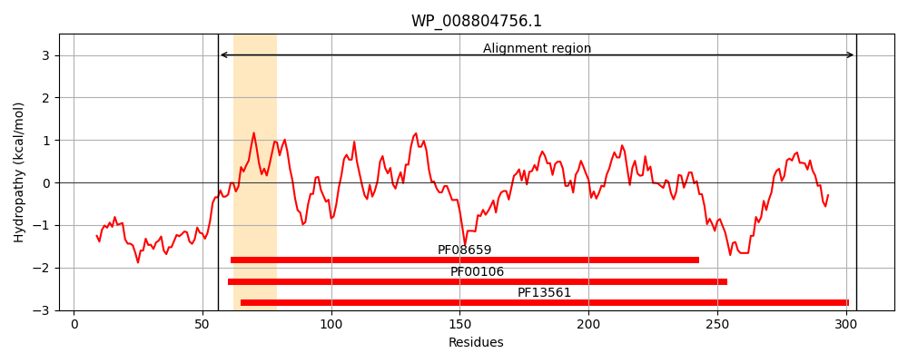
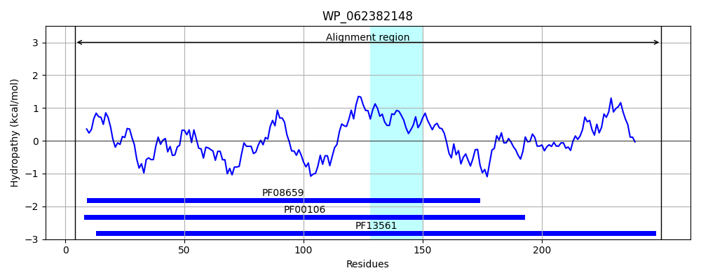
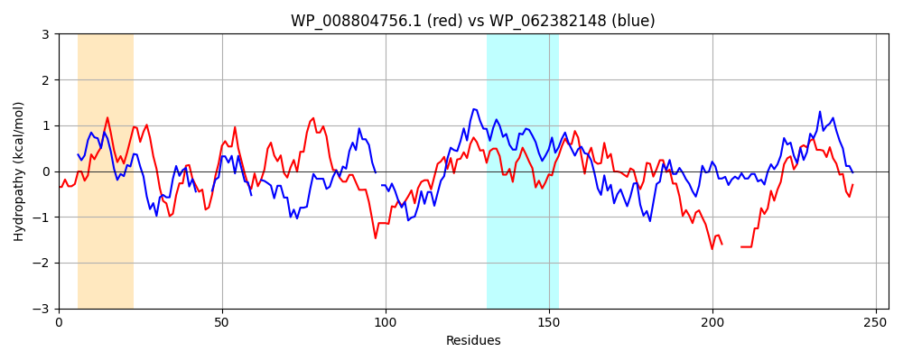

Hit Accession: WP_062382148
Hit TCID: 1.A.115.1.5
Hit Description: gnl|BL_ORD_ID|21287 gnl|TC-DB|WP_062382148.1|1.A.115.1.5 SDR family oxidoreductase [Pseudomonas abietaniphila]
Mach Len: 254
e:0.000000
Query TMS Count : 1
Hit TMS Count: 1
TMS-Overlap Score: 0.000000
Predicted Substrates:None
BLAST Alignment:
Score: 247 , Bit scores: 99 bits, E-value: 8.4e-25, Alignment length: 254, Percentage identity: 31
Query: 56 RLAGKKALITGGDSGIGRAVAIAFAREGADVAISYLPEEQEDADEVIALIKAEGRTAVALPGDIRSESFCQSLVADAVEQLGGLSILVNNAGRQQYCETLEELTTEDFDATFKTNVYAPFWITRAALPHLQAGSAIINTTSVQAYKPSPILLDYAQTKACLAIFTKSLAKQVAKRGIRVNAVAPGPYWTVLQSSGGQPDEKVKQ-----FGKDTPMGRPGQPVEIAPLYVTLASDACSYTSGQVWCSDGGDGVV 304
+L GK AL+TGG +GIG A A FA EGA V I+ + + DA A+ + T V + D + +L + G L +L NAG L ++T + TF NV + + ALP L G+++I T S + YA +KA + F ++ + R +RVN ++PG T PD +Q PMGR G+P EIA + LASD S+ +G DGG +
Sbjct: 4 KLEGKIALVTGGTTGIGLATAKRFAEEGAYVYITGRRQAELDA----AVARVGNATGVQV--DSTNLEQLDALYRQIGTEKGRLDVLFANAGGGSMLP-LGDITEAQYQDTFDRNVKGVLFTVQKALPLLAKGASVILTGSTAGSSGTAAFSVYAASKAAVRAFARNWILDLKDRNVRVNTLSPGATRTPGLVDLAGPDAAQQQGLLDYLASQIPMGRVGEPEEIAAAALFLASDDASFVNGIELFVDGGQAQI 250 | Protein Hydropathy Plots: |
|---|
|  |  |
Pairwise Alignment-Hydropathy Plot:
|
|---|
|  |